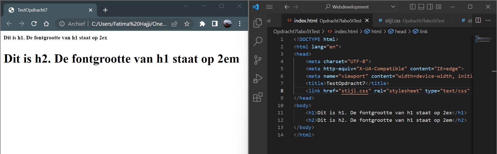

is een soort van een percentage. "em" verwijst naar de basistekstgrootte. De waarde van 1 em betekent hetzelfde als een waarde van 100 procent.
verwijst naar de hoogte van een kleine letter x in het gebruikte lettertype. Als u dus twee alinea's hebt waarin de tekst 24 punten groot is, maar elke alinea een ander lettertype gebruikt, kan de waarde van ex voor elke alinea anders zijn. Dit komt omdat verschillende lettertypen verschillende hoogtes hebben voor x
De standaard corpsgrootte in browsers is 16px. De afspraak is dat 1em gelijk is aan de standaard corpsgrootte en dat is gelijk aan 100%.
Dus 1ex kan niet groter zijn dan 16px. Bijvoorbeeld
Dus: 2em = 16px * 2 = 32px
En: 2ex = 6px * 2 = 12px
Dan: 12px < 32px --dus in dit geval is 2em groter.
In de volgende image ziet u in practice hoe 2em > 2ex :
